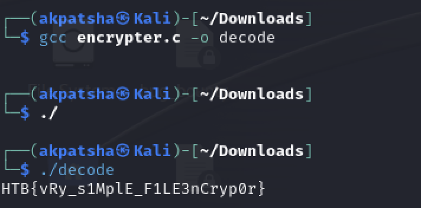

I first downloaded and unzipped the provided archive:
cd rev_simpleencryptor
ls
Output:
encrypt flag.enc
Checking the file type:
file encrypt
Output:
ELF 64-bit LSB pie executable, x86-64, dynamically linked, not stripped
I used dogbolt.org to decompile the ELF file. After uploading the binary, I selected the Ghidra decompiler. From the output, I cleaned up unnecessary parts and obtained the main logic.
undefined8 main(void)
{
...
}
#include "out.h"
int main(void)
{
int iVar1;
time_t t;
uint rnd;
uint shift;
long i;
FILE *flag;
size_t file_size;
void *buf;
FILE *flag_enc;
flag = fopen("flag", "rb");
fseek(flag, 0, 2);
file_size = ftell(flag);
fseek(flag, 0, 0);
buf = malloc(file_size);
fread(buf, file_size, 1, flag);
fclose(flag);
t = time(NULL);
rnd = (uint)t;
srand(rnd);
for (i = 0; i < (long)file_size; i++) {
iVar1 = rand();
*((char*)buf + i) ^= (char)iVar1;
shift = rand() & 7;
*((char*)buf + i) = (*((char*)buf + i) << shift) | (*((char*)buf + i) >> (8 - shift));
}
flag_enc = fopen("flag.enc", "wb");
fwrite(&rnd, 1, 4, flag_enc);
fwrite(buf, 1, file_size, flag_enc);
fclose(flag_enc);
return 0;
}
The encryption process:
time(NULL)).rand() & 7).flag.enc.time() is predictable — it uses the current system time (UNIX timestamp).
The seed is even stored in the first 4 bytes of the encrypted file, making decryption trivial.
hexdump flag.enc
Output:
0000000 355a 62b1 f500 123e bdc0 168d fdf0 9975
0000010 effa 9a39 964b a121 1643 7123 fb65 4b27
0000020
The first 4 bytes B1 62 5A 35 represent the seed (in little-endian).
#include <stdio.h>
#include <stdlib.h>
int main() {
FILE *flag_enc = fopen("flag.enc", "rb");
unsigned int seed;
fread(&seed, 1, 4, flag_enc);
printf("%x\n", seed);
srand(seed);
fseek(flag_enc, 0, SEEK_END);
int size = ftell(flag_enc) - 4;
fseek(flag_enc, 4, SEEK_SET);
char *enc = malloc(size);
char *dec = malloc(size);
fread(enc, 1, size, flag_enc);
fclose(flag_enc);
for (int i = 0; i < size; i++) {
int r1 = rand();
int r2 = rand();
char shift = r2 & 7;
enc[i] = (enc[i] >> shift) | (enc[i] << (8 - shift));
dec[i] = enc[i] ^ r1;
}
for (int i = 0; i < size; i++) {
printf("%c", dec[i]);
}
printf("\n");
free(enc);
free(dec);
return 0;
}
⚙️ Note: This code works correctly only on Linux, since the random generator implementation differs across systems.
Running the program successfully decrypted and revealed the original flag 🎉